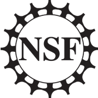

realfast is made possible by:
-
Financial support the National Science Foundation under the Advanced Technologies and Instrumentation program Grant No. 1611606
-
The National Radio Astronomy Observatory
-
Web design by Andew Halle
-
Logo by Studio Principle
For questions or comments, please contact PI Casey Law at claw@astro.caltech.edu.